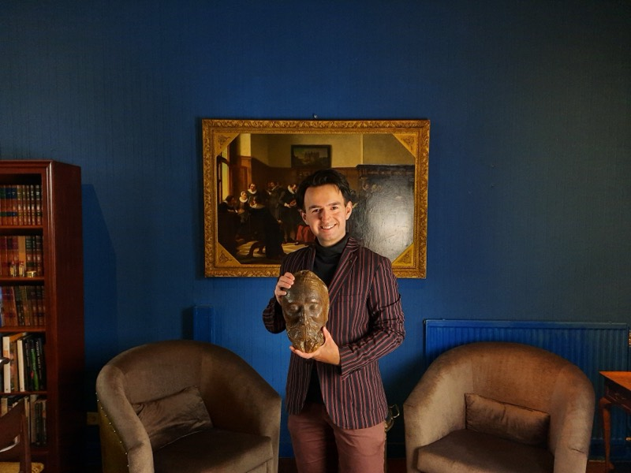
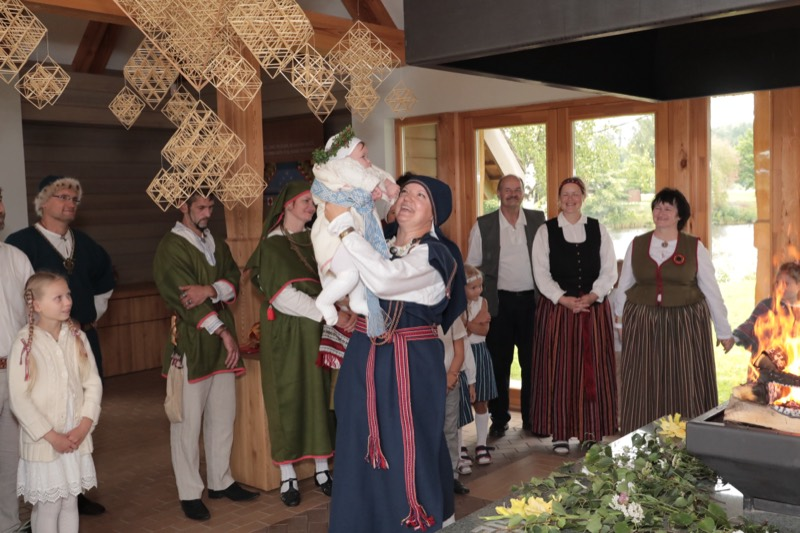
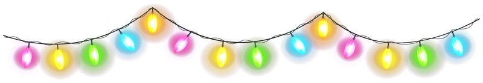
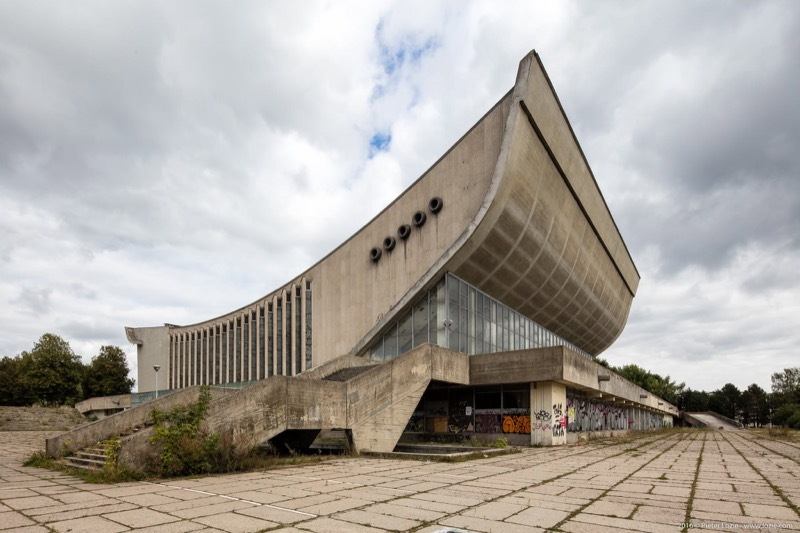
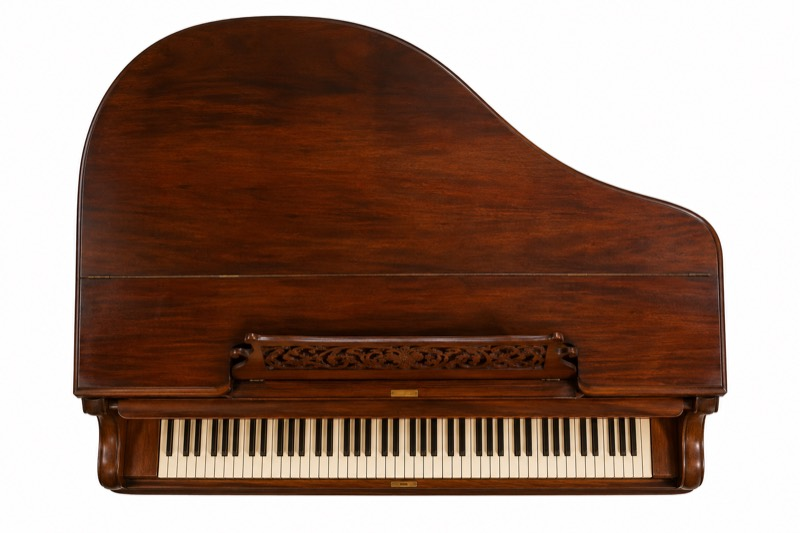

JongerenorganisatieForumvoorDemocratie
Zoeken werkt alleen met JavaScript.
Alle edities van De Dissident, met alle artikelen.
Frederik Jansen over de Frankfurter Schule
Kunstverzamelaar Adriaan van Waalwijk van Doorn

“Mensen zongen in een Sovjet-isolatiecel de Dainas.”

“In Litouwen ben ik de enige rechtse parlementariër.”


